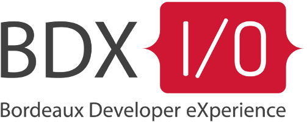

PHP : trollons, mais trollons bien!

Qui suis-je ?
Arnaud Langlade (@_aRn0D)
Développeur PHP/Symfony @CleverAge
Core team member @Sylius
(et bientôt @akeneo)
Pourquoi ce talk ?!?
Polo : Quel langage, utilises tu ?
Arnaud : PHP, mon polo!
Polo :
Oui, en PHP on a vu ... (PHP4)
require 'lib/function.php';
if (isset($_GET['page']))
{
echo "<html>";
include($_GET['page'].'.php');
echo "</html>";
}
class Connection
{
var $dsn;
function connection()
{
// ...
}
}
On est d'accord, ça ne donne pas envie...

Mais ça évolue ! Depuis un moment déjà...
Amélioration du mode objet (PHP5)
namespace Bdd/Common;
use Bdd/Common/Connection as BaseConnection;
class Connection extends BaseConnection implements
ConnectionInterface,
ContainerAwareInterface
{
use ConnectionTrait;
const TYPE = 'my_sql';
private $dsn = null; // Peut être public ou protected
public function __construct(array $config)
{/*...*/}
final public function query(Criteria $criteria)
{/*...*/}
}
Amélioration du mode objet (PHP7)
declare(strict_types = 1);
namespace Bdd/Common;
use Bdd/Common/Connection as BaseConnection;
class ConnectionFactory implements ConnectionFactoryInterface
{
public function create(string $dsn) : Connection
{
try {
return new Connection($dsn);
} catch (TypeError $e) {
// Une partie des erreurs Fatales sont transformées en Error
echo $e->getMessage();
}
}
}
La delorean est en marche...
- Mélange procédural et d'objet (mais gros gap entre PHP4 et PHP7)
- L'api est très bien documentée (et internationalisée)
- La core team a défini un processus de release (RFC + Vote)
- Communauté vaste, expérimentée et organisée (User group, conférence)
La communauté est là et elle...
La communauté
- La communauté s'est bien diversifiée (il y'a de très bons développeurs)
- Les projets open source demandent une bonne qualité de code (design et tests)
- De nombreuse librairies sont disponibles (packagist.org)
PHP Framework Interop Group (PHPFIG)
- Regroupe des acteurs majeurs du monde PHP (Sf, Zf, eZ, Doctrine, etc.)
- Parle des problématiques communes à chaque projet
- Création des PHP Standard Recommendation (PSRs)
Les normes PSR (PHP Standard Recommendation)
- PSR0 et PSR4 : Chargement des classes
- PSR1 et PSR2 : Style du code
- PSR3 : Gestion des logs
- PSR7 : Messages HTTP
Industrialisation de PHP
- Gestionnaire de dépendences : Composer
- /^(|micro) framework$/: Symfony, Laravel, Zend, Yii, Slim, Silex, etc...
- Framework de tests : PhpUnit, Atoum, Behat ou bien PhpSpec.
- Intégration continue: PHP_CodeSniffer, PHP_Depend/PHPMD, PHPCPD, PhpDependencyAnalysis etc...

Pour finir
Ce n'est pas un langage qui fait un développeur mais la façon dont il l'utilise.
PHP et sa communauté évolue dans le bon sens même si le langage n'est pas parfait.
Merci! Questions ?
Arnaud Langlade
Twiter @_aRn0D
Github @aRn0D